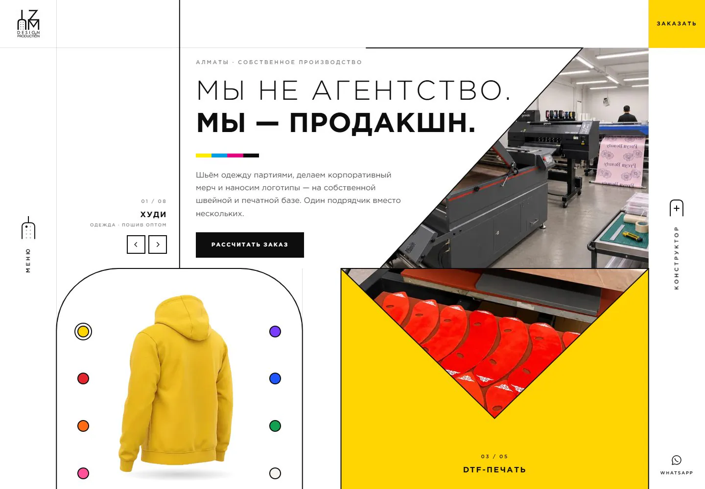
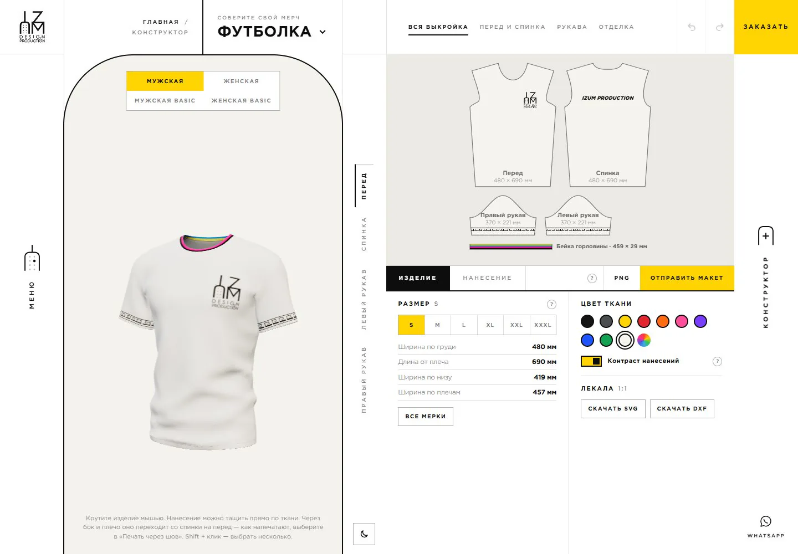
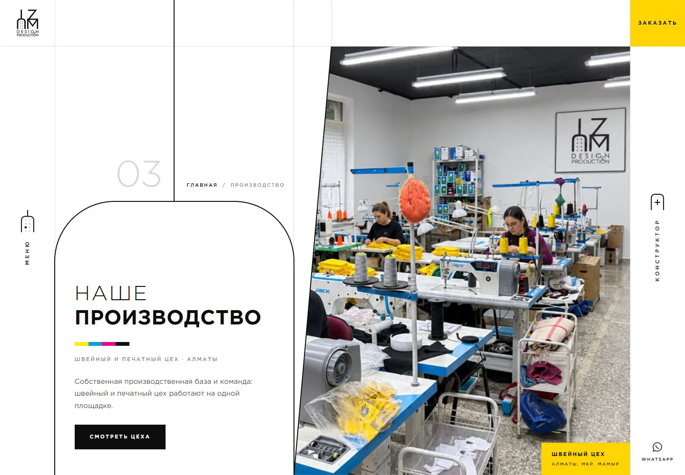

Сайт с 3D-конструктором
Izum Design & Production
Сайт швейного продакшна на сетке знака и 3D-конструктор мерча.

Первый экран: знак во весь экран, вещь в арке U
О проекте
Сайт производства одежды и корпоративного мерча в Алматы. Сетка всех страниц выведена из пропорций знака IZUM: арка U, диагональ Z и галочка M задают колонки, срезы фото и линии первого экрана. В 3D-конструкторе изделие крутится в браузере, нанесение кладётся слоями, лекала скачиваются в SVG и DXF.
Что внутри
- Сетка страниц из пропорций знака
- Оборот изделия на 360° и перекраска в восемь цветов
- 3D-конструктор мерча: нанесение слоями, PNG и отправка макета
- Лекала S–XXXL в SVG и DXF
Экраны проекта



